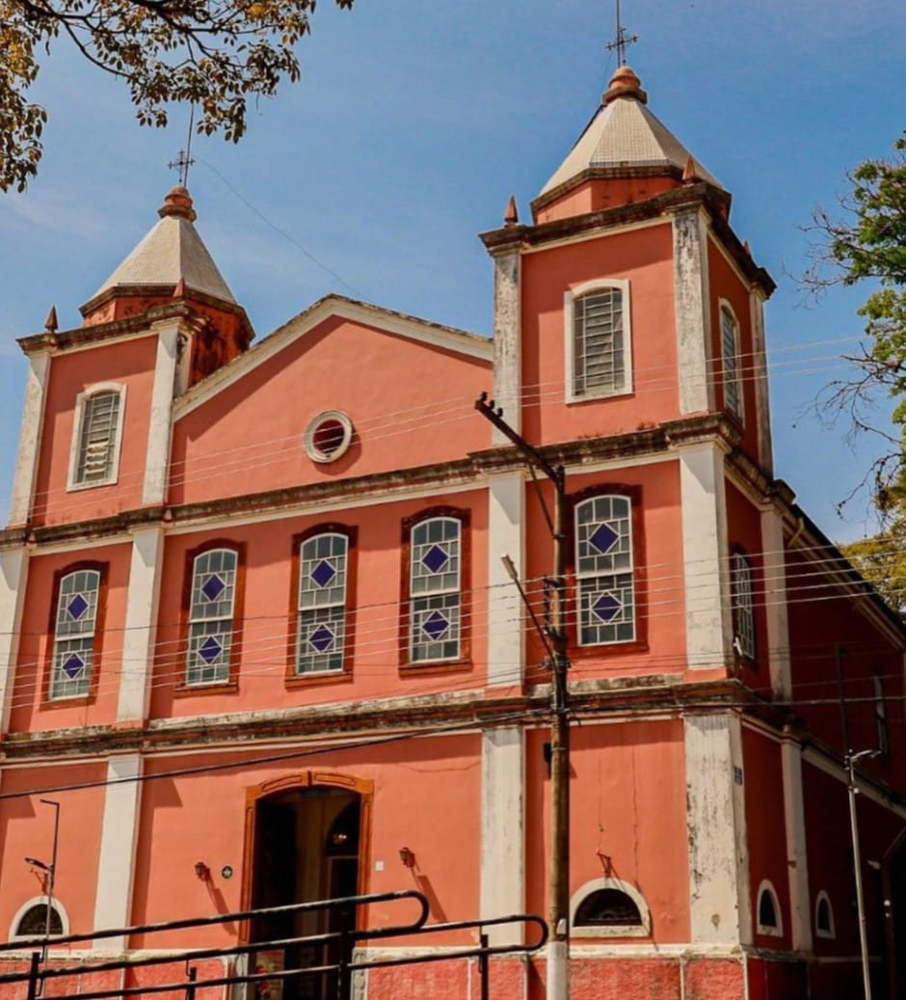

Pontos turísticos
Igreja Nossa Senhora do Rosário
Construída em 1839, o nome escolhido foi para homenagear a Nossa Senhora do Rosário dos homens pretos e São Benedito, santos de grande devoção aos escravos, pois serviu para abrigar cristãos, que na época eram proibidos de frequentar a igreja principal durante o período colonial, suas paredes são de taipa com quase um metro de espessura, e os altares feitos em madeira foram conservados após reforma. Em seu interior é possível observar o brasão do império e nas paredes encontram-se obras de arte retratadas em painéis de azulejos portugueses. Localizada na praça do rosário e é possível fazer visitação com guia e com prévio agendamento, também é possível assistir às missas. Igreja do Rosário Praça Nossa Sra. do Rosário, 110-176 - Centro
Igreja da Matriz
Considerada o ponto turístico do cenário religioso de maior importância da nossa cidade, a Igreja Matriz Santo Antônio da Cachoeira foi recém restaurada, traz com sua beleza, suas paredes em tons de ouro e abriga no teto o rosto de todos os papas e é a primeira igreja de São Paulo fora dos muros de Roma, foi construída em 1817. Localizada na praça Santo Antônio, é possível fazer visitação com guia com prévio agendamento e também é possível assistir às missas. R. Padre Antônio Gonçalves, 2-40 - Boa Vista /p>
Santo Cruzeiro

“O maior crucifixo do mundo”. Em 1939, durante a presença das Santas Missões, houve uma festa religiosa de grande proporção, saindo da Igreja Matriz em procissão com mais de 3 mil pessoas para levar ao topo do morro da Penha, uma enorme cruz de madeira foi carregada por 40 homens. A procissão foi dirigida pelo Padre José Patrício Gonçalves e pelo Sr. Francisco Gonçalves Bueno. Localizado em Jardim Monte Cristo.
Vila Biarritz
Inaugurada em 1996, a praça Horácio da Silva Pinto localizado na Vila Biarritz, recém reformada e revitalizada. A praça possui muita área de descanso e diversas opções de lazer para toda família. A praça apresenta um lindo lago onde pode praticar uma boa pesca, pista de corrida, academia ao ar livre, playground, quiosque com churrasqueira, ciclovia e uma pista de skate.
Parque Ecológico
Inaugurado em 1994, possui uma área de 40.000 m° e conta com um lago formado pelo represamento do Rio Cachoeira. Também possui uma pista de cooper, quadra de areia, playground, academia ao ar livre, horto com viveiros de diversas mudas, orquidário, um centro de educação ambiental e biblioteca. O local é perfeito para praticar exercícios físicos, descanso e lazer para toda a família. O espaço também conta com uma lanchonete, um centro de informações, estacionamento e está aberto das 7h as 17h de segunda a segunda.
Cachoeira do Pião
Localizada a 25 quilômetros do centro de Piracaia, está a cachoeira formada pelo Rio Atibainha. Possui uma forte queda d’água de oito metros de altura, onde em seu final encontra-se um lago para banho, porém para chegar ao local, é necessário passar por uma região de trilhas, onde o nível da caminhada por elas é considerado de difícil acesso. A cachoeira está localizada no Bairro do Pião.